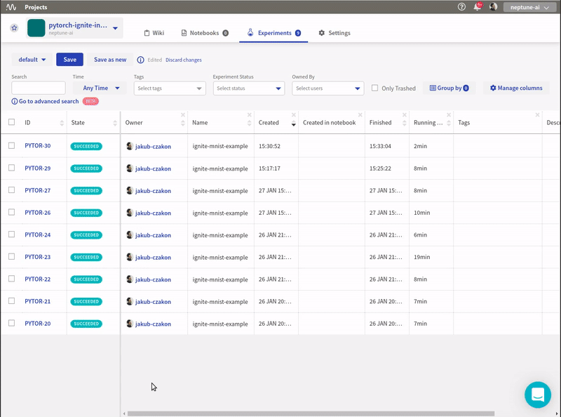

Log PyTorch Ignite metrics to neptune

Prerequisites
Integration with PyTorch Ignite framework is introduced as a part of logging module so just need to have neptune-client installed.
pip install neptune-client
Create the NeptuneLogger with all the information you want to track
from ignite.contrib.handlers.neptune_logger import *
npt_logger = NeptuneLogger(api_token="ANONYMOUS",
project_name='shared/pytorch-ignite-integration',
name='ignite-mnist-example',
params={'train_batch_size': train_batch_size,
'val_batch_size': val_batch_size,
'epochs': epochs,
'lr': lr,
'momentum': momentum})
Attach handlers to npt_logger
There are many handlers that you can attach to track your training.
OutputHandler for tracking losses and metrics
npt_logger.attach(trainer,
log_handler=OutputHandler(tag="training",
output_transform=lambda loss: {'batchloss': loss},
metric_names='all'),
event_name=Events.ITERATION_COMPLETED(every=100))
npt_logger.attach(train_evaluator,
log_handler=OutputHandler(tag="training",
metric_names=["loss", "accuracy"],
another_engine=trainer),
event_name=Events.EPOCH_COMPLETED)
npt_logger.attach(validation_evaluator,
log_handler=OutputHandler(tag="validation",
metric_names=["loss", "accuracy"],
another_engine=trainer),
event_name=Events.EPOCH_COMPLETED)
OptimizerParamsHandler for tracking optimizer parameters like learning rate and momentum.
npt_logger.attach(trainer,
log_handler=OptimizerParamsHandler(optimizer),
event_name=Events.ITERATION_COMPLETED(every=100))
WeightsScalarHandler for tracking the norm of model weights per layer.
npt_logger.attach(trainer,
log_handler=WeightsScalarHandler(model),
event_name=Events.ITERATION_COMPLETED(every=100))
GradsScalarHandler for tracking the norm of gradients per layer.
npt_logger.attach(trainer,
log_handler=GradsScalarHandler(model),
event_name=Events.ITERATION_COMPLETED(every=100))
NeptuneSaver for logging model checkpoints during training.
from ignite.handlers import Checkpoint
def score_function(engine):
return engine.state.metrics['accuracy']
to_save = {'model': model}
handler = Checkpoint(to_save, NeptuneSaver(npt_logger), n_saved=2,
filename_prefix='best', score_function=score_function,
score_name="validation_accuracy",
global_step_transform=global_step_from_engine(trainer))
validation_evaluator.add_event_handler(Events.COMPLETED, handler)
Run trainer
trainer.run(train_loader, max_epochs=epochs)
Log additional information
You can log any additional information directly to neptune experiment. It can be accessed via npt_logger.experiment.
torch.save(model.state_dict(), 'model.pth')
npt_logger.experiment.log_artifact('model.pth')
Close the logger after you are finished tracking
npt_logger.close()
Monitor your PyTorch Ignite training in Neptune
Now you can watch your pytorch-ignite model training in neptune!
Check this example experiment.
{kind=link}
Full PyTorch Ignite monitor script
Simply copy and paste it to ignite_example.py and run.
Remember to change your credentials in the NeptuneLogger:
npt_logger = NeptuneLogger(api_token=os.getenv('NEPTUNE_API_TOKEN'), # put your api token in environment variable
project_name='neptune-ai/pytorch-ignite-integration', # change it to your project
...)
import torch
from torch.utils.data import DataLoader
from torch import nn
import torch.nn.functional as F
from torch.optim import SGD
from torchvision.datasets import MNIST
from torchvision.transforms import Compose, ToTensor, Normalize
from ignite.engine import Events, create_supervised_trainer, create_supervised_evaluator
from ignite.metrics import Accuracy, Loss
from ignite.contrib.handlers.neptune_logger import *
LOG_INTERVAL = 10
class Net(nn.Module):
def __init__(self):
super(Net, self).__init__()
self.conv1 = nn.Conv2d(1, 10, kernel_size=5)
self.conv2 = nn.Conv2d(10, 20, kernel_size=5)
self.conv2_drop = nn.Dropout2d()
self.fc1 = nn.Linear(320, 50)
self.fc2 = nn.Linear(50, 10)
def forward(self, x):
x = F.relu(F.max_pool2d(self.conv1(x), 2))
x = F.relu(F.max_pool2d(self.conv2_drop(self.conv2(x)), 2))
x = x.view(-1, 320)
x = F.relu(self.fc1(x))
x = F.dropout(x, training=self.training)
x = self.fc2(x)
return F.log_softmax(x, dim=-1)
def get_data_loaders(train_batch_size, val_batch_size):
data_transform = Compose([ToTensor(), Normalize((0.1307,), (0.3081,))])
train_loader = DataLoader(MNIST(download=True, root=".", transform=data_transform, train=True),
batch_size=train_batch_size, shuffle=True)
val_loader = DataLoader(MNIST(download=False, root=".", transform=data_transform, train=False),
batch_size=val_batch_size, shuffle=False)
return train_loader, val_loader
train_batch_size = 64
val_batch_size = 1000
epochs = 10
lr = 0.01
momentum = 0.5
train_loader, val_loader = get_data_loaders(train_batch_size, val_batch_size)
model = Net()
device = 'cpu'
if torch.cuda.is_available():
device = 'cuda'
optimizer = SGD(model.parameters(), lr=lr, momentum=momentum)
criterion = nn.CrossEntropyLoss()
trainer = create_supervised_trainer(model, optimizer, criterion, device=device)
metrics = {
'accuracy': Accuracy(),
'loss': Loss(criterion)
}
train_evaluator = create_supervised_evaluator(model, metrics=metrics, device=device)
validation_evaluator = create_supervised_evaluator(model, metrics=metrics, device=device)
@trainer.on(Events.EPOCH_COMPLETED)
def compute_metrics(engine):
train_evaluator.run(train_loader)
validation_evaluator.run(val_loader)
npt_logger = NeptuneLogger(api_token=None,
project_name="neptune-ai/pytorch-ignite-integration",
name='ignite-mnist-example',
params={'train_batch_size': train_batch_size,
'val_batch_size': val_batch_size,
'epochs': epochs,
'lr': lr,
'momentum': momentum})
npt_logger.attach(trainer,
log_handler=OutputHandler(tag="training",
output_transform=lambda loss: {'batchloss': loss},
metric_names='all'),
event_name=Events.ITERATION_COMPLETED(every=100))
npt_logger.attach(train_evaluator,
log_handler=OutputHandler(tag="training",
metric_names=["loss", "accuracy"],
another_engine=trainer),
event_name=Events.EPOCH_COMPLETED)
npt_logger.attach(validation_evaluator,
log_handler=OutputHandler(tag="validation",
metric_names=["loss", "accuracy"],
another_engine=trainer),
event_name=Events.EPOCH_COMPLETED)
npt_logger.attach(trainer,
log_handler=OptimizerParamsHandler(optimizer),
event_name=Events.ITERATION_COMPLETED(every=100))
npt_logger.attach(trainer,
log_handler=WeightsScalarHandler(model),
event_name=Events.ITERATION_COMPLETED(every=100))
npt_logger.attach(trainer,
log_handler=GradsScalarHandler(model),
event_name=Events.ITERATION_COMPLETED(every=100))
# kick everything off
trainer.run(train_loader, max_epochs=epochs)
# log additional information
torch.save(model.state_dict(), 'model.pth')
npt_logger.experiment.log_artifact('model.pth')
npt_logger.close()